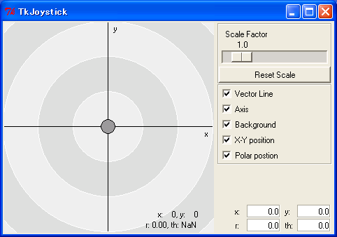

概要本ページでは、RTCを連携させてジョイスティック操作により 車輪型機構をインタラクティブに操作するサンプルについて解説します。 車輪型機構のコントローラとジョイスティックはそれぞれOpenRTMのコンポーネントとして作成し、 両者の接続をOpenRTMのツールを用いてビジュアルに行います。 本サンプルが対象とするモデルは、OpenHRPのサンプルモデルのひとつである 以下の車輪型機構です。
車輪を３つ備えており、前輪(車輪がひとつの方)によるステアリングが可能です。 ステアリングの一軸と各車軸の３軸で、合計４つの回転関節からなるモデルとなっています。 このモデルのファイルはOpenHRP3ソースの etc ディレクトリにある simple_vehicle.wrl になります。 また、以下で説明するサンプルのプログラムやプロジェクトのファイル一式は OpenHRP3 ソースの sample/JoystickControl 以下にあります。
準備本サンプルはOpenRTMの環境として、以下をそろえておく必要があります。
以上のソフトウェアのインストールについては、 OpenRTM-aistのページ を参照してください。 ネームサーバの起動CORBAやOpenRTMでは、システム各所で生成されたオブジェクトを名前で参照するために、 通常「ネームサーバ」というプログラムを用います。 このためには、あらかじめネームサーバを起動しておく必要があります。 ネームサーバを起動するには以下のような方法があります。
GrxUI経由の起動だと、GrxUIの停止や再起動がOpenRTMのツールやコンポーネントの動作に 影響を与えてしまうため、ネームサーバは初めからずっと起動させた状態しておくとよいです。 以下にUbuntuとWindowsの場合の起動の例を示します. Ubuntuの場合Ubuntuの場合、パッケージとしてomniORBを入れると自動的にネームサーバも起動される ようになりますので、これを確認しましょう。 コマンドラインで $ ps ax | grep omniNamesと入力して、出力結果に"omniNames"のプロセスがあることを確認します. あればOKですし、なければ以下のようにして手動で起動しましょう。 $ sudo /etc/init.d/omniorb4-nameserver startここではUbuntuのデーモン用スクリプトを使いましたが、 omniNamesのコマンドを使ってもOKです。 Windowsの場合WindowsでOpenRTM-aistのインストーラ版をインストールすると、 スタートメニューの"OpenRTM-aist" -> "C++" -> "examples" 以下に、 ネームサーバを起動する項目 "Start Naming Service" が登録されますので、 これを使って起動しましょう。 ネームサーバが起動すると、以下のようなコンソール画面がでます。
ネームサーバ起動における注意omniORBのネームサーバomniNamesは、 登録内容をログファイルに保存し、 再起動された時に以前の登録内容を復活させるようになっています。 この仕組みが問題を起こすことがあるので注意が必要です. 例えば、DHCPなどでネットワークが変わってIPアドレスが変わると、 復活させた内容との不整合がおこるのか、ネームサーバを利用するシステムがうまく動作 しなくなったりします。 これを解消するには、ネームサーバ起動前に以前のログファイルを消去するようにします。 削除方法 － Linux の場合ターミナルを開いて次のように打ってください。 $ sudo /etc/init.d/omniorb4-nameserver stop $ sudo rm /var/log/omninames* $ sudo /etc/init.d/omniorb4-nameserver start 削除方法 － Windows の場合コマンドプロンプトを開いて次のように打ってください。 del %TEMP%\grxui-%USERNAME%\omninames* ジョイスティックコンポーネントの起動OpenHRP3 を展開したフォルダの sample/JoystickControl/TkJoyStick のフォルダへ移動し、 Pythonスクリプト "TkJoystickComp.py" を起動してください。 Windowsでは、エクスプローラからこのファイルをダブルクリックすることでも起動できます。 コマンドラインから起動する場合は、 $ cd OpenHRP展開フォルダ/sample/JoystickControl/TkJoyStick $ ./TkJoyStickComp.pyなどとします。 なお、このフォルダにはコンポーネントの設定ファイル"rtc.conf"があります。 "rtc.conf"は、特に指定しなければ、コンポーネント起動時のカレントディレクトリから読み込まれる ようになっています。 したがって今回の例では、"TkJoyStick"フォルダに移動したうえで"TkJoystickComp.py"を 起動するようにしてください。 ジョイスティックコンポーネントが起動すると、以下のような画面が表れます。 （うまくいかない場合はPythonやOpenRTM-aist Python版が正しくインストールされているかを確認してください。）
 ここで、真ん中の丸い部分をマウスでドラッグして動かすことができます。 この丸い部分の位置が、ジョイスティックの傾きに相当します。 本プログラムはOpenRTMのコンポーネントとして作成されており、 ジョイスティックの傾きを出力するOpenRTMのポートを備えています。 このポートを他のRTコンポーネントの入力へ接続することが可能です。 今回はこれをロボットのコントローラへとつないで、 ロボットをジョイスティックで操作できるようにします。 RTSystemEditorにおけるジョイスティックコンポーネントの確認ここで、RTSystemEditorを起動してジョイスティックコンポーネントがオブジェクトとして 認識されていることを確認してみましょう。 RTSystemEditorをインストールしたeclipseを起動してください。 eclipseが起動したらRTSystemEditorのパースペクティブを開きます。
TreeViewのlocalhostノードを開くと先ほど起動したジョイスティックコンポーネントに対応する、"TkJoyStick0|rtc"という項目がみられます。
TkJoyStick0|rtcの項目をクリックすると、プロパティーウィンドウに このコンポーネントのプロパティーが表示されます。
次に "Open New System Editor" ボタンを押して、"System Diagram" ビューを開き、"Name Service View" から コンポーネントTkJoyStick0の項目をドラッグ＆ドロップしてください。 すると、ジョイスティックコンポーネントに対応する箱が"System Diagram"上に 表示されます。
SystemDiagram上では、コンポーネントがもつポート間の接続を行います(図21 参照)。 ここでは、ドラッグして表示された"TkJoyStick0"の箱の右側に、２つ突起のようなものが ついていることに着目してください。 これがこのコンポーネントがもつポートです。 本サンプルでは上側についている、"pos"というジョイスティックの傾きを出力するポートを使います。 RTCBuilderを用いたコントローラコンポーネント雛形の作成プロジェクトの新規作成
RTCBuilderのパースペクティブを開きます。 モジュール設定Eclipseのツールボタン"Open New RtcBuilder Editor"ボタンまたはファイルメニュー"Open New RtcBuilder Editor" をクリックすることで、コンポーネントプログラムの雛形を作成するRTCBuilderのウィンドウが 表れます。 この中の項目を埋めていくことにより、比較的簡単にコンポーネントの雛形コードを作成することができます。 今回作成するコントローラの設定を保存したものが、 OpenHRP3展開フォルダの sample/JoystickControl/JoystickController.xml にあります。 RTCBuilderの基本タブ・ウィンドウ内の"Profile Import"ボタンをクリックすることで開く、 ファイルオープンダイアログからJoystickController.xmlを読み込んでみてください。 では、RTCBuilderにおける設定内容をみていきましょう。 基本タブ・ウィンドウ内の "RT-Component Basic Profile"の項目では、コンポーネントの名前（正確には型名）や、各種メタ情報、 動作のタイプなどを設定します。 今回は、"Module name" を "JoystickController"とし、コントローラのコンポーネントを作成することにします。 ポートの設定基本タブ・ウィンドウからデータポートタブ・ウィンドウに切り替えてください。 "RT-Component Data InPort Profile" をみると、angle, velocity, command というポートが定義されているのが分かると思います。 angle, velocityはシミュレータから出力されるロボットの関節角、関節角速度を入力するためのポートです。 また、commandはジョイスティックコンポーネントが出力するx, y 位置を入力するためのポートで、 この入力値をもとにして、ロボットを制御するためのトルクを計算します。 後ほど、RTSystemEditorを用いてこのポートをジョイスティックの出力ポートと接続します。 "RT-Component Data OutPort Profile" に定義されているtorqueというポートが、 ロボットを制御するための関節トルク値を出力するポートです。
プログラミング言語の設定言語・環境タブ・ウィンドウに切り替え、生成する雛形のプログラミング言語やコンパイル環境を指定します。 ここでは、C++項目をクリックして"Windows"または、"その他"のラジオボタンいずれかを選択してください。 2008/12/17現在では、両者の違いはありません。Linux、Windows環境に対応した雛形コードを同時に生成します。
雛形の生成
基本タブ・ウィンドウの下部にある"Output Project"に雛型名を設定して、
"Generate"ボタン(図9：モジュールの設定項目参照)を押すことにより、
コンポーネントプログラムの雛形となるファイル群が生成されます。 エクスポートファイルの設定ワークスペースディレクトリに生成された雛形コードを直接コピーしてコード編集することも可能ですが、RTCBuilderのエクスポート機能を使えば必要なファイルだけを抽出できるようになります。 ここでは、Windows環境用のソリューションファイル、プロパティファイル、バッチファイル、Linux環境用のmakeファイル、READMEテキストファイルを出力するように設定します。ウィンドウメニュ→設定項目を選択して、設定ダイアログ(図12：エクスポートファイルの設定参照)を開き以下の通りに操作します。
エクスポート基本タブ・ウィンドウの下部にある"Export"ボタン(図9：モジュールの設定項目参照)を押下します。図14：RTコンポーネントのエクスポートが表示されるので、対象プロジェクトリストの"JoystickController"を選択します。 宛先ディレクトリを設定しOKボタンを押下します。 新規プロジェクトファイル作成時のみリソースの保管が開きますので、 "はい"ボタンを押してディレクトリ選択ダイアログからワークスペースディレクトリ内のプロジェクト名ディレクトリを指定してください。 図14：RTコンポーネントのエクスポートの例で言うと C:/Documents and Settings/openhrp/workspace/Sample にあたります。
生成された雛形コードからVC2005用のソリューションファイルとプロジェクトファイルを除外して、 以下の節で説明するコーディングを施したものを sample/JoystickControl/Controller に用意しました。 コントローラコンポーネントのコーディング前項の操作によってRTCBuilderがコンポーネントの雛形は生成してくれますが、 コンポーネントの実際の動作に対応する部分（コアロジックと呼ぶ）は 当然ですがコンポーネント開発ユーザが記述する必要があります。 RTコンポーネントにおいてはその動作を記述する関数があらかじめいくつか定義されており、 開発者は動作の種類に応じてそれら関数を上書きすることで、 望みのコントローラを作成することができます。 今回のサンプルでは、それらの関数は雛形として生成された"JoystickController.cpp"上に実装します。 以下に上書き可能な関数の一覧を示します。
以上の上書き可能な関数の詳細はOpenRTMのマニュアルを参照ください。 ここでは、このようにいくつかの用途別に上書き可能な関数が定義されていて、 それらのうち必要な部分を上書きしていくことで、コンポーネントの開発が行えるということが 理解できればよいかと思います。 今回実際に上書きする関数は、コンポーネント生成時の初期化を行う"onInitialize"メソッドと、 周期的に呼ばれ制御等を行う部分である"onExecute"メソッドの部分です。 これらは上に一覧で挙げた関数の中でも、重要で使用頻度の高いものだと言えます。 エラーにも対応可能なきちんとしたコントローラを作るためには、他のいくつかの関数も上書きすべきなのですが、 今回はあえて必要最低限の部分にしぼって、「完全ではないがとりあえず動く」という コンポーネントを作成したいと思います。 onInitializeメソッドの上書き"JoystickController.cpp"において、初期状態ではonInitialize関数はコメントアウトされています。 このコメントアウト部分を有効化して、以下のように記述します。
RTC::ReturnCode_t JoystickController::onInitialize()
{
// ポート初期化
m_torque.data.length(4);
return RTC::RTC_OK;
}
ここでは、トルクの出力ポートにおけるdouble配列のサイズを、 ロボットの関節数にあわせて４に設定しています。 入力ポートに関しては、出力側がサイズを決定しますので、今回は特に初期化等はしていません。 なお、cppファイルの変更とあわせて、ヘッダファイル"JoystickController.h"の対応する関数の コメントアウトも解除しておきます。 onExecuteメソッドの上書き制御コードを記述するonExecute関数は、 少し複雑ですが以下のような実装を行うことにします。 この関数に関しても、ヘッダファイルにて対応する部分も有効化しておきましょう。
RTC::ReturnCode_t JoystickController::onExecute(RTC::UniqueId ec_id)
{
// ロボットからのデータ入力
m_angleIn.read();
m_velocityIn.read();
double steerAngle = m_angle.data[0];
double steerVel = m_velocity.data[0];
double tireVel = m_velocity.data[1];
// ジョイスティック（ユーザ）からのデータ入力
m_commandIn.read();
double steerCommandAngle = 3.14159 * -0.5 * m_command.data[0] / 180.0;
double tireCommandVel = m_command.data[1] / 10;
// ステアリングトルク計算
double steerCommandTorque = 20.0 * (steerCommandAngle - steerAngle) - 2.0 * steerVel;
// 駆動トルク計算
double tireCommandTorque = 1.0 * (tireCommandVel - tireVel);
// ロボットへのトルク出力
m_torque.data[0] = steerCommandTorque;
m_torque.data[1] = tireCommandTorque;
m_torque.data[2] = tireCommandTorque;
m_torque.data[3] = tireCommandTorque;
m_torqueOut.write();
return RTC::RTC_OK;
}
ここではジョイスティックからの入力のうち、最初の要素であるx値をステアリングの目標角に設定し、 ２番目の要素であるy値を駆動速度の目標値として設定します。 その上でそれら目標値に追従するよう、適当なゲインを用いてステアリングと駆動輪のトルクを決定しています。 コンポーネントのコンパイル以上の追加コーディングを "sample/JoystickControl/Controller" 以下のソースファイルに行っていますので、 それらの確認やコンパイルを行ってください。 Windows の場合
Windowsでは、プロジェクトを開く前にまず "copyprops.bat" を実行してプロパティシートをコピーします。
すると OpenRTM の etc ディレクトリから "rtm_config.vsprops" を コピーされます。 Linux の場合Linuxでは、sample/JoystickControl/Controller ディレクトリにて、 $ make -f Makefile.JoystickControllerとしてコンパイルを行ってください。 コントローラコンポーネントの起動前節で作成したコンポーネントを起動・生成し、 システムにおいて利用できるようにしましょう。 OpenRTMのコンポーネントを起動する方法はいくつかありますが、 今回の例では、コンパイルして作成された実行ファイル（Windows の場合は "JoystickControllerComp.exe", Linux の場合は "JoystickControllerComp"）を実行することで、コンポーネントを生成することができます。 rtc.confの修正コンポーネントを起動する前に、 コンポーネント実行時の挙動を設定する "rtc.conf" というファイルを変更しておく必要があります。 "rtc.conf"ファイルはRTCBuilderによって既に作成されているのでそれを以下のように変更して使用することにします。 corba.nameservers: localhost naming.formats: %n.rtc exec_cxt.periodic.type: SynchExtTriggerEC OpenHRPのコントローラの場合、今のところはnaming.formatsとexec_cxtを以上のように設定する必要があります。 exec_cxt は、コンポーネントの "onExecute" 関数をどのように駆動させるかを決定する 「実行コンテキスト」の種類を指定します。 コントローラのコンポーネントをOpenHRPと接続してシミュレーションを行う場合は、 シミュレーション中の世界における時間の進みと同期してコントローラを動かす必要があります。 これを実現するために、 "SynchExtTriggerEC" という実行コンテキストを設定します。 "rtc.conf"は、コンポーネント生成の際のカレントディレクトリから読み込まれるため、 それを考慮して適宜ファイルを置くフォルダを決めてください。 本サンプルでは、"sample/JoystickControl/Controller/" に置いています。 なお、rtc.confに記述する設定内容の詳細は、 OpenRTMのマニュアル を参照してください。上で設定した以外にも、様々な設定項目が用意されていますし、 ユーザが独自の設定項目を記述することも可能です。 また、rtc.confの読み込みについては、カレントディレクトリに置く以外にも、 コマンドラインから読み込むファイルを指定するなどの方法もあります。 それらの詳細もOpenRTMのマニュアルをあたってください。 Windows・Visual C++ の場合Visual C++ でビルドを行うと、プロジェクトのサブフォルダ "components" 以下に "JoystickControllerComp.exe" という実行ファイルが生成されます。 ここでは、Visual C++ の「デバッグ」メニューを利用してコンポーネントを起動 することにしましょう。こうすると、プロジェクトのトップフォルダである "Controller"フォルダをカレントディレクトリとして実行ファイルが起動されるので、 上述で作成した"rtc.conf"を正しく読み込むことができます。図16のように、 Visual C++ の「デバッグ」-「デバッグなしで開始」メニューをクリックします。
起動すると、空のコンソールウィンドウがでます。 Linuxの場合コマンドライン上で Controller フォルダに移動し、./JoystickControllerCompとしてコンポーネントを起動します。 RTSystemEditorによるコンポーネントの確認コントローラのコンポーネントがうまく起動していれば、RTSystemEditorの"Name Service View"において、 図17のように、"JoystickController0|rtc" という項目が追加されているはずです。
ここでコンポーネントの名前が JoystickController0 というように 最後に数字が付加されているのは、これがコンポーネントの「インスタンス」だからです。 本サンプルでは、"JoystickController"というのはコンポーネントの「型名」（"Module name"とも言う） であり、これが実際に生成された「インスタンス」は複数個生成され得るものなので、 それらを区別するため、OpenRTMでは通常型名に続いて数字を付加しインスタンス名とするようになっています。 今回のインスタンス名である "JoystickController0" は後ほどの設定でも参照するので、覚えていてください。 TkJoyStickコンポーネントと同様に、JoystickControllerもSystemDiagram上に ドラッグして表示させましょう。
JoystickController0の箱には4つの突起がついており、 これがRTCBuilderで設定した各ポートに対応します。 ポートの上にマウスをもっていくと、そのポートの情報が表示されますので、 各ポートについて確認してみてください。 TkJoystick0とJoystickController0のポート接続は後ほど行います。 コントローラブリッジOpenHRP3では、シミュレーション対象のモデルとコントローラコンポーネントとの接続を、 「コントローラブリッジ」というプログラムが行います。 このプログラムは、OpenHRP3フォルダの "Controller/bridge/ControllerBridge" という実行ファイルです。 (Windowsの場合は ControllerBridge.exeです。） コントローラブリッジの設定コントローラブリッジの設定には、 実行ファイル起動時に与えるコマンドラインオプションを用いることができます。 本サンプルでは、オプションを記述したシェルスクリプトファイルを作成しておき、 そのファイルを用いてコントローラブリッジを起動することにします。 以下の内容で "JoystickController.sh" というファイルを作成することにします。 (ソースの "sample/JoysticControl/Controller" 以下に入れてあります。 Windowsでは同様の内容を "JoystickController.bat" というバッチファイルとして作成してあります。)
CONTROLLER_BRIDGE_DIR=../../../Controller/bridge
if [ -z $NS_HOST ]; then
if [ -z $NS_PORT ]; then
. $CONTROLLER_BRIDGE_DIR/../../bin/unix/config.sh
fi
fi
$CONTROLLER_BRIDGE_DIR/ControllerBridge \
--server-name JoystickController \
--out-port angle:JOINT_VALUE \
--out-port velocity:JOINT_VELOCITY \
--in-port torque:JOINT_TORQUE \
--name-server $NS_HOST:$NS_PORT
以下に各オプションの内容を示します。
コントローラブリッジの起動以上の設定でコントローラブリッジを起動します。 Windowsの場合はエクスプローラ上でダブルクリックするなどして、 作成したバッチファイル "JoystickController.bat" を実行しましょう。 コマンドラインから起動する場合は、Controllerディレクトリに移動してから 起動してください。これは、コントローラブリッジが生成するRTコンポーネントも 先ほど作成したrtc.confの設定を必要とし、これをカレントディレクトリから読み込むためです。 コントローラブリッジが起動すると、シミュレーション対象のモデルに対応するRTコンポーネントが オプションの内容に従って生成されます。RTSystemEditor上からこれを確認してみましょう。 "Name Service View" にて "VirtualRobot0" というコンポーネントが追加されていることを確認し、 これを例によって"SystemDiagram"上へドラッグしてください。 このコンポーネントが、シミュレーション対象のモデルに対応するコンポーネントになります。 図19のように"VirtualRobot0"を左右反転させる場合は、コンポーネントをマウス左ボタンで選択して、ミドルボタンをクリックしてください。
RTSystemEditor上で"VirtualRobot0"のポートを確認してください。 コントローラブリッジのオプション "--out-port" と "--in-port" で設定したポートが 備わっているのが分かると思います。 以上でシミュレーションに必要なコンポーネントがそろいました。 シミュレーションプロジェクトの作成モデルの配置とモデルに対するコントローラの対応付けを、 GrxUI上でシミュレーションプロジェクトとして作成します。 シミュレーションプロジェクトの作成法に関する詳細は別途GrxUIのマニュアルをみていただくとして、 ここでは既に設定したプロジェクトを読み込んでみましょう。GrxUIを起動し、sample/JoysticControl 以下の "SimulationProject.xml"をプロジェクトとして読み込んでください。 するとGrxUI上に車輪型機構が床の上にある状態が表れます。
"OpenHRP"-"Controller"タブにて、車輪型機構のモデルに"JoystickController"を指定してあります。 これはコントローラブリッジのオプション "--server-name" で指定した名前です。 コントローラブリッジは既に起動してあるので、この名前のサーバにアクセス可能となっており、 シミュレーション開始時にサーバとの接続が行われます。 RTSystemEditorを用いたジョイスティックとコントローラの接続シミュレーション前の準備として、 RTSystemEditorを用いてジョイスティックコンポーネントとコントローラコンポーネントとの接続を行います。 RTSystemEditorのSystemDiagram上では既に３つのコンポーネントが表示されていると思います。 ここで、"TkJoystick0"の右上にある"pos"ポートから"JoystickController0"の左下にある"command"ポートへ、 マウスのドラッグを行います。 そこで現れるダイアログで"OK"とすると、図21のようにドラッグしたポート間が線で結ばれます。
これは、ポート"pos"と"command"がOpenRTMシステムにおいて接続されたことを示しています。 これで、ジョイスティックの倒れ具合が、コントローラへのコマンド入力として与えられることになります。 同様に、"JoystickController0"のangle, velocity, torqueのポートと、 "VirtualRobot0" の同名のポートも接続を行います。これで、３つのコンポーネントの間の 接続が完了します。 ただし、ジョイスティックからのポート出力を有効にするために、ジョイスティックコンポーネントの active 化を行う必用があります。 "TkJoyStick0" を右クリックすると表示されるメニューから "Active" を選択します。 するとジョイスティックコンポーネントの色が青から緑へ変換します。 これでシミュレーション開始をするための準備が整いました。シミュレーション開始前のRTSystemEditorの様子 が図22のようであることを確認してください。
シミュレーション開始後にRTSystemEditorをみれば、 図23のようにジョイスティックコントローラが active になっていること（青から緑へ）が確認できます。
シミュレーションの開始とジョイスティック操作では、シミュレーションを開始してみましょう。 GrxUIの"Start Simulation"ボタンをクリックします。 シミュレーションが開始しても、車輪モデルは停止していると思います。 この状態であらかじめ起動しておいたジョイスティックのウィンドウ上で、 ジョイスティックの操作を行ってください。 ジョイスティックの左右がステアリング、上下が駆動力に対応しており、 ラジコンのようにモデルを操作できることと思います。
今回説明では分かりやすくなるため、ジョイスティックコントローラやコントローラブリッジなど
それぞれのサービスを手動で開始しましたが、以下のようなバッチファイルを用意することで、
各サービスをまとめて開始することができます。 JoystickControllerAutomated.bat (Windows の場合)JoystickControllerAutomated.batについて説明します。
SET CONTROLLER_BRIDGE_DIR=..\..\..\Controller\bridge
@echo off
if "%NS_HOST%" == "" (
if "%NS_PORT%" == "" (
call %CONTROLLER_BRIDGE_DIR%\..\..\bin\dos\config.bat
)
)
@echo on
start "JoystickController" ".\components\JoystickControllerComp.exe"
cd ..\TkJoyStick
start "TkJoyStickComp" "TkJoyStickComp.py"
cd ..\JoystickController
%CONTROLLER_BRIDGE_DIR%\ControllerBridge ^
--server-name JoystickController ^
--out-port angle:JOINT_VALUE ^
--out-port velocity:JOINT_VELOCITY ^
--in-port torque:JOINT_TORQUE ^
--connection angle:JoystickController0:angle ^
--connection velocity:JoystickController0:velocity ^
--connection torque:JoystickController0:torque ^
--name-server %NS_HOST%:%NS_PORT%
このバッチファイルでは順番に、ジョイスティックコントローラコンポーネント、ジョイスティックコンポーネント、 コントローラブリッジが開始されます。以下に順を追って説明します。
SET CONTROLLER_BRIDGE_DIR=..\..\..\Controller\bridge
@echo off
if "%NS_HOST%" == "" (
if "%NS_PORT%" == "" (
call %CONTROLLER_BRIDGE_DIR%\..\..\bin\dos\config.bat
)
)
@echo on
このパートでは、変数の代入を行ないます。ControllerBridgeのあるディレクトリを変数CONTROLLER_BRIDGE_DIRに代入します。 環境変数NS_HOST、NS_PORTが定義されていない場合は、bin/dos/config.batから取得できるようにします。 start "JoystickController" ".\components\JoystickControllerComp.exe"ジョイスティックコントローラコンポーネントを別プロセスで起動しサービスを開始します。 cd ..\TkJoyStick start "TkJoyStickComp" "TkJoyStickComp.py" cd ..\Controllerカレントディレクトリを移動してジョイスティックコンポーネントを別プロセスで起動しサービスを開始します。 カレントディレクトリを"sample/JoysticControl/Controller"に戻します。 %CONTROLLER_BRIDGE_DIR%\ControllerBridge ^ --server-name JoystickController ^ --out-port angle:JOINT_VALUE ^ --out-port velocity:JOINT_VELOCITY ^ --in-port torque:JOINT_TORQUE ^ --connection angle:JoystickController0:angle ^ --connection velocity:JoystickController0:velocity ^ --connection torque:JoystickController0:torque --name-server %NS_HOST%:%NS_PORT%コントローラブリッジの設定と同様ですが、違いは --connectionオプションを使用してJoyStickController0 と VirtualRobot0 のポート間接続を自動化していることです。 例えば、 --connection angle:JoystickController0:angle の場合 "angle"ポートをコンポーネント"JoystickController0"の"angle"ポートと接続します。 velocity, torqueについても同様です。 従ってこのバッチファイルを利用する場合 RTSystemEditorを使用してJoyStickController0 と VirtualRobot0 を接続する必要はありません。 この２つのコンポーネント間ポート接続はシミュレーション開始時に自動的に行われます。 JoystickControllerAutomated.sh (Linux の場合)JoystickControllerAutomated.batと異なる箇所は、ジョイスティックコントローラコンポーネント、ジョイスティックコンポーネントを開始するコマンドがgnome-terminalに差し替わった程度です。
CONTROLLER_BRIDGE_DIR=../../../Controller/bridge
if [ -z $NS_HOST ]; then
if [ -z $NS_PORT ]; then
. $CONTROLLER_BRIDGE_DIR/../../bin/unix/config.sh
fi
fi
gnome-terminal -t JoystickControllerComp -e ./JoystickControllerComp
cd ../TkJoyStick
gnome-terminal -t TkJoyStickComp -e ./TkJoyStickComp.py
cd ../Controller
${CONTROLLER_BRIDGE_DIR}/ControllerBridge \
--server-name JoystickController \
--out-port angle:JOINT_VALUE \
--out-port velocity:JOINT_VELOCITY \
--in-port torque:JOINT_TORQUE \
--connection angle:JoystickController0:angle \
--connection velocity:JoystickController0:velocity \
--connection torque:JoystickController0:torque \
--name-server $NS_HOST:$NS_PORT
シミュレーションの再開"JoystickControllerAutomated.bat"、"JoystickControllerAutomated.sh" のように --connection を使用してコンポーネント間ポート接続を自動化した場合、各サービスを再起動しない方法でシミュレーションを再開できますので以下にその方法を示します。
|